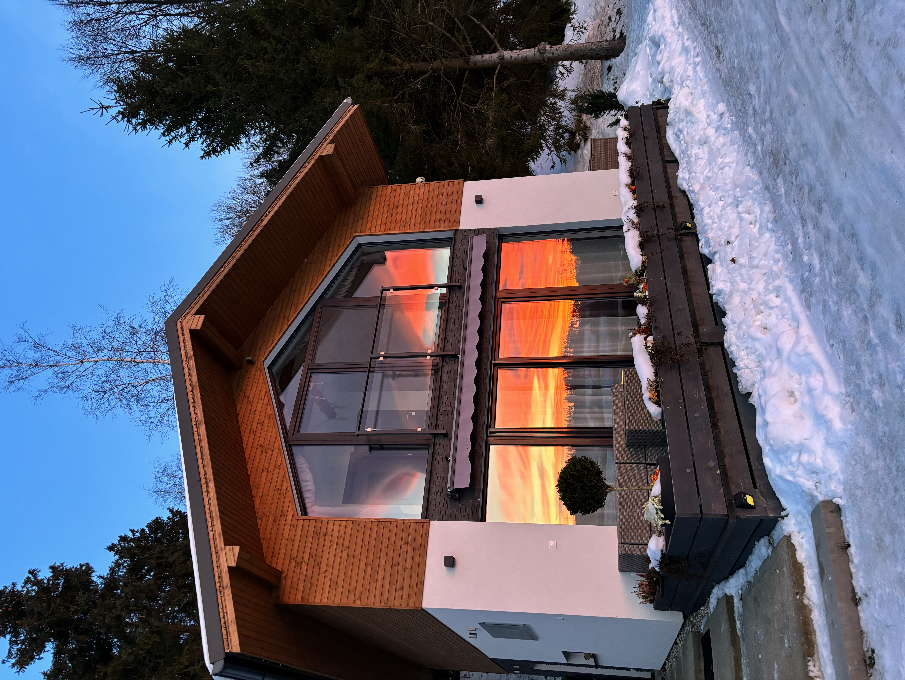
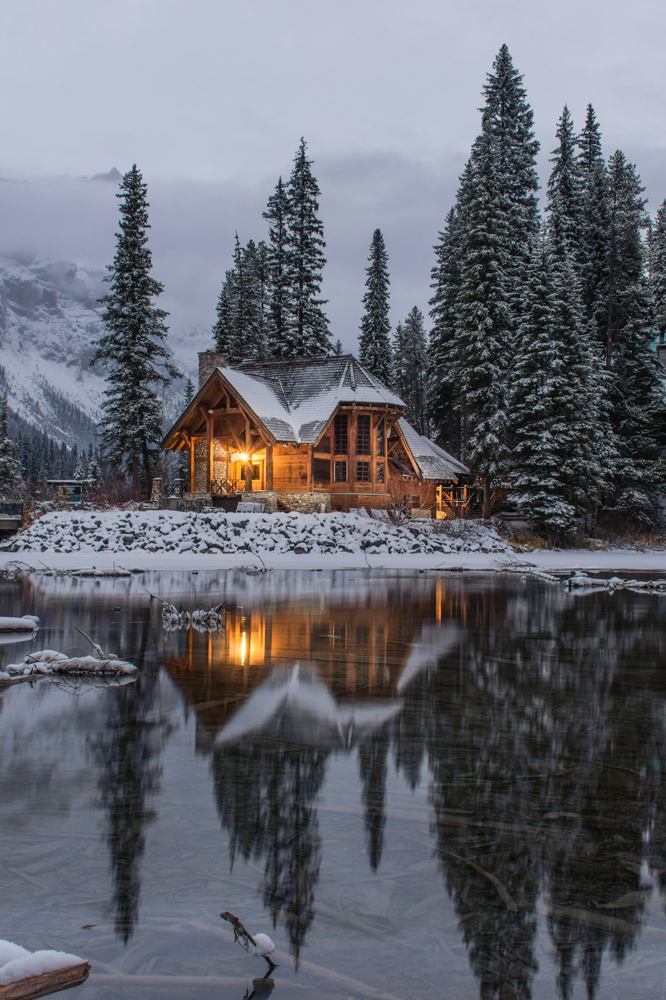

Kapacita
Pohodlné ubytovanie pre 6 osôb v dvoch spálňach.

Ilustračná fotografiaMlynčeky · Vysoké Tatry
Oddych s výhľadom na Vysoké Tatry
Vychutnajte si pokoj, súkromie a nezabudnuteľné výhľady na Vysoké Tatry v našej chatke v Mlynčekoch. Ideálne miesto na oddych s rodinou, priateľmi alebo vo dvojici.
Viac informáciíPohodlné ubytovanie pre 6 osôb v dvoch spálňach.
Plne vybavená kuchyňa, obývací priestor s krbom, sauna, vírivka, terasa a ďalšie.
Chatka sa nachádza v obci Mlynčeky, v krásnom prostredí pod Vysokými Tatrami.
Chatka Panorama sa nachádza v obci Mlynčeky, v krásnom prostredí pod Vysokými Tatrami. Ponúka pohodlné ubytovanie, moderné vybavenie a jedinečnú atmosféru, kde si oddýchnete a načerpáte novú energiu.
Chatka ponúka ubytovanie až pre 6 osôb v dvoch spálňach. K dispozícii je plne vybavená kuchyňa, obývací priestor s krbom, terasa s výhľadom na hory a vonkajší priestor na relax.
Pozrieť ceny pobytu
Ilustračná fotografia| Zimná mimosezóna | 175 € objekt / nocmin. 1 osoba, min. 2 noci |
|---|---|
| Vianočný pobyt | 225 € objekt / nocmin. 1 osoba, min. 3 noci |
| Silvester | 315 € objekt / nocmin. 1 osoba, min. 3 noci |
| Zimná sezóna | 175 € objekt / nocmin. 1 osoba, min. 2 noci |
| Letná mimosezóna | 165 € objekt / nocmin. 1 osoba, min. 2 noci |
| Veľkonočný pobyt | 185 € objekt / nocmin. 1 osoba, min. 3 noci |
| Letná sezóna | 175 € objekt / nocmin. 1 osoba, min. 2 noci |
Chatka Panorama je skvelým východiskovým bodom na objavovanie krás Vysokých Tatier a ich okolia. Či už máte radi turistiku, históriu alebo zimné športy, v okolí si nájdete aktivity podľa svojich predstáv.
Mapa zobrazuje obec Mlynčeky a okolie; presnú polohu chatky si potvrďte pri kontakte.
Fotografie sú ilustračné. Pred zverejnením ich nahraďte vlastnými zábermi Chatky Panorama.
Váš pobyt sa začína rozhovorom
Radi vám poskytneme informácie o pobyte, cenách a dostupnosti.
Mlynčeky 126/1, Mlynčeky
Otvoriť mapu obce